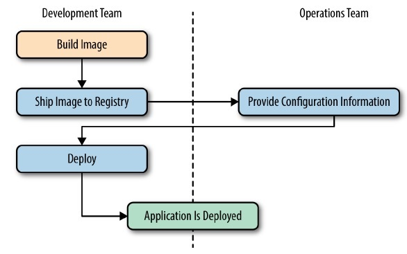

Eduardo David Jr
Senior Data Engineer
Aug 24, 2021
## What Docker isn't - Is not a Virtual Machine (VM) - Is not a cloud platform - Is not a replacement for configuration managers (Puppet, Salt, Ansible) - Is not a replacement for deployment frameworks (CI/CD, Jenkins, Terraform, Pulumi) --- ## Docker Benefits - Devs would be more familiar with tools for packaging Docker (compared to rpm, apt, and others) - Application and OS requirements are bundled in single standard image format - Artifacts can be the same in any environment (dev, test, prod) - Abstracting software applications from the hardware without sacrificing resources <footer>Docker Up and Running. Karl Matthias & Sean Kane</footer> --- ## Deployment <div class="vhalf"> <h3>Without Containers</h3> </div> <div class="vhalf"> <h3>Using Containers</h3>  </div> --- ## Architecture  --- ## Alternatives - LXD (Canonical) - full system containers (~VM) - podman (Redhat) - runs without a daemon --- ## Other Considerations when Using Containers - Limited Isolation - Shares the host kernel - Containers are just processes inside the Docker server - By default, shares the entire CPU/RAM on the host system - Lightweight - New containers from existing images takes as low as a few kb - Stateless; Externalize State - Configured via env variables - Ephemeral storage - mount storage volumes inside the container - send to external systems
Using Docker
## Dockerfile Instructions - `FROM [--platform=<platform>] <image> [AS <name>]` - initializes a new build stage and sets the Base Image for subsequent instructions - `ENV <key>=<value> ...` - sets the environment variable `<key>` to the value `<value>` - persists when the container is run - override with the docker run command --env `<varname>=<value>` - `ARG <name>[=<default value>]` - sets the environment variable `<key>` to the value `<value>` - defines a variable that users can pass at build-time to the builder - override with the docker build command --build-arg `<varname>=<value>` - `ADD [--chown=<user>:<group>] <src>... <dest>` - copies new files, directories or remote file URLs from `<src>` and adds them to the filesystem of the image at the path `<dest>` - `COPY [--chown=<user>:<group>] <src>... <dest>` - copies new files or directories from `<src>` and adds them to the filesystem of the container at the path `<dest>` --- ## Dockerfile Instructions - `WORKDIR /path/to/workdir` - sets the working directory for any RUN, CMD, ENTRYPOINT, COPY and ADD instructions that follow it in the Dockerfile - `RUN ["executable", "param1", "param2"]` - execute any commands in a new layer on top of the current image and commit the results - `CMD ["executable","param1","param2"]` - provide defaults for an executing container - There can only be one CMD instruction in a Dockerfile - CMD should be used as a way of defining default arguments for an ENTRYPOINT command or for executing an ad-hoc command in a container. - overwritten from command line when docker container runs - `ENTRYPOINT ["executable", "param1", "param2"]` - configure a container that will run as an executable. - command and parameters will not be overwritten from command line Note: Default value for ENV ``` ARG CONT_IMG_VER ENV CONT_IMG_VER=${CONT_IMG_VER:-v1.0.0} ``` --- ## Dockerfile (Example) #### Create a file named `Dockerfile` on any directory Add the following line: ```dockerfile FROM alpine:latest ``` Build the image ```sh docker build . ``` Check that the image exists ```sh docker images ``` --- ## Dockerfile Improvements \* Good practice to put the exact version instead of `latest` Go to https://hub.docker.com/ (Dockerhub) ```dockerfile FROM alpine:3.14 ``` Tag the build so it would not appear as `<none>`:`<none>` ```sh # docker build -t <tag>:<version> . docker build -t com.cobenagroup/docker-demo:0.1.0 . ``` Check that the image builds ```sh docker images com.cobenagroup/docker-demo ``` Run the image ```sh docker run com.cobenagroup/docker-demo:0.1.0 ``` --- ### Other Useful Commands Find all images under `com.cobenagroup/` ```sh docker images com.cobenagroup/* ``` List running containers ```sh docker ps # also list stopped containers docker ps -a ``` Remove stopped containers ```sh docker rm <id> # remove all stopped docker rm $(docker ps -aq) ``` Remove image ```sh docker rmi <id> # remove all `<none>` tags docker rmi $(docker images -f "dangling=true" -q) ``` --- ## Executable Image Add an echo command ```dockerfile FROM alpine:3.14 ENTRYPOINT [ "echo" ] ``` Run container and pass arguments ```sh docker run com.cobenagroup/docker-demo:0.1.0 hello world # Run and remove container docker run --rm com.cobenagroup/docker-demo:0.1.0 hello world ``` ## Executable Image; Default Arguments ```dockerfile FROM alpine:3.14 ENTRYPOINT [ "echo" ] CMD [ "foo" ] ``` --- ## Environment Variables, ARG vs ENV #### What would be the difference between the two? ARG ```dockerfile FROM alpine:3.14 ARG NAME=foo ENTRYPOINT [ "sh", "-c", "echo ${NAME}" ] ``` ENV ```dockerfile FROM alpine:3.14 ENV NAME=foo ENTRYPOINT [ "sh", "-c", "echo ${NAME}" ] ``` --- ## Environment Variables, continued ```dockerfile FROM alpine:3.14 ARG NAME=foo ENV NAME=${NAME} ENTRYPOINT [ "sh", "-c", "${NAME}" ] ``` Replace ARG during build time ```sh docker build -t com.cobenagroup/docker-demo:0.1.0 --build-arg NAME=bar . ``` Replace ENV during run time ```sh docker run --env NAME=baz com.cobenagroup/docker-demo:0.1.0 ``` --- ## Running commands during build time ```dockerfile FROM alpine:3.14 ENTRYPOINT [ "python", "-c" ] CMD [ "print('Hello World')" ] ``` Install Python ```dockerfile FROM alpine:3.14 RUN apt install python ENTRYPOINT [ "python", "-c" ] CMD [ "print('Hello World')" ] ``` --- ## Entering and Debugging a stopped container ```sh # Run without --rm docker run com.cobenagroup/docker-demo:0.1.0 # Commit the stopped image docker commit <CONTAINER_ID> <IMG_NAME> # Use the image name specified above docker run -it --rm --entrypoint /bin/sh <IMG_NAME> ``` Note: ```sh apk add python # this would throw an error apk search -e python* apk add python3 # Run Python python # error python3 # success ``` --- ## Fixing the previous image ```dockerfile FROM alpine:3.14 RUN apk update RUN apk add python3 ENTRYPOINT [ "python3", "-c" ] CMD [ "print('Hello World')" ] ``` --- ## Exercise :) ### For Python users: - Use the miniconda image as the base image - Print a dataframe from inside the container <br><br> ### For Go users: - Use the Go image as the base image - Compile any Go function that prints something to stdout/stderr
Docker Compose
## What is Docker Compose? - tool for defining and running multi-container Docker applications - YAML file to configure the application’s services - single command to create and start all services --- ## Minimal Config docker-compose.yml ```yaml version: "3.9" services: demo: image: com.cobenagroup/docker-demo:0.1.0 ``` Start the container ```sh docker compose up ``` Remove stopped containers ```sh docker compose rm ``` Stop and remove running containers ```sh docker compose down ``` --- ## Some of the basic parameters - `image`: - image to use for spawning the container - `build`: - sets the Dockerfile to use to define the container - `args`: - fills up the build-arg or ARG from Dockerfile - `environment`: - sets environment variables to a container - `command`: - overrides CMD - `entrypoint`: - overrides ENTRYPOINT - `volumes`: - mounts a host path or volume to the container - `ports`: - expose container ports to host --- ## Simple web server with DB connection Dockerfile ```dockerfile FROM continuumio/miniconda3:4.10.3-alpine RUN conda install -c defaults -c conda-forge \ fastapi \ uvicorn \ psycopg2 COPY main.py /app/ WORKDIR /app ENTRYPOINT [ "uvicorn", "main:app", "--host", "0.0.0.0" ] ``` --- main.py ```python from fastapi import FastAPI import psycopg2 import os app = FastAPI() @app.get("/db") async def db(): conn = psycopg2.connect( dbname=os.environ["DB_NAME"], user=os.environ["DB_USER"], host=os.environ["DB_HOST"], port=os.environ["DB_PORT"], password=os.environ["DB_PWD"], ) with conn.cursor() as cur: cur.execute("SELECT * FROM users") return cur.fetchall() ``` --- ## Docker Compose docker-compose.yml ```yml version: "3.9" services: postgres: image: postgres:13.4-alpine3.14 environment: - POSTGRES_PASSWORD=qwerty ports: - 5432:5432 volumes: - ./init.sql:/docker-entrypoint-initdb.d/init.sql web: build: ./python image: com.cobenagroup/web-demo:0.1.0 environment: - DB_HOST=postgres - DB_PORT=5432 - DB_NAME=postgres - DB_USER=postgres - DB_PWD=qwerty ports: - 8080:8000 ``` --- ## Further Readings - Reducing Image Size and Multi-stage builds - Docker volumes - Container Orchestration (Swarm, Kubernetes) - The Twelve Factor App - Principles of Container Based Applications